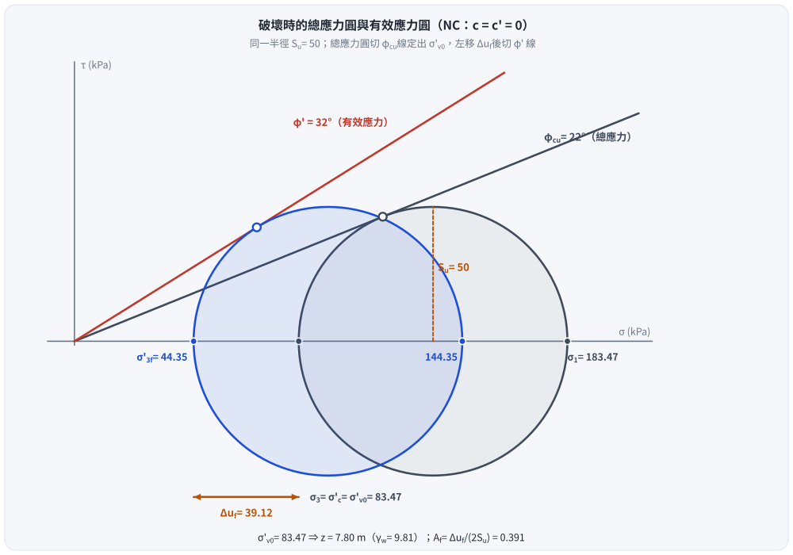

📄 題目正本：考卷原文・附圖・判讀清單（已確認）
SM-2012-1 題目正本
本檔只記錄考卷上寫了什麼、圖上畫了什麼，不含任何解法。解析見同資料夾
SM-2012-1.md。
判讀清單已確認（凍結）；本檔原則上不再修改（改動須回考卷原圖並記 log）。
| 項目 | 內容 |
|---|---|
| 考卷 | raw/exams/SM-2012_土壤力學與基礎設計.pdf 第 1 頁（全一頁），第一題 |
| 考年 | 民國 101 年（2012） |
| 配分 | 25 分（㈠13 分、㈡12 分） |
| 附圖 | 無 |
| 判讀狀態 | 已確認（2026-11-15 關卡一：使用者授權依建議判讀確認；轉錄 2026-11-15；PyMuPDF 110 dpi 全頁目視，PDF 文字層核對；盲讀後才比對既有解析） |
1. 考卷原文（逐字）
一、有一正常壓密黏土其飽和單位重為 $\gamma_{sat}$= 18 kN/m³，有效摩擦角 $\phi'$ = 32°，如於現地土層同一位置取得土樣進行壓密不排水（CU）三軸壓縮試驗及不排水三軸試驗（UU），得不排水（CU）三軸壓縮試驗摩擦角 $\phi$ = 22°，不排水剪力強度為 50 kN/m²，其地下水位面位於地表以下 2 m。試問：㈠此一試體對應現地之有效覆土壓及現地取樣深度為何？（13 分）㈡試驗時試體達破壞時所產生之孔隙水壓 $\Delta u_f$ 為何？（12 分）
註：「得不排水（CU）三軸壓縮試驗摩擦角」照考卷原文（CU 前寫「不排水」）。
2. 考卷給的公式、附表與參數
- 正常壓密黏土：$\gamma_{sat}$ = 18 kN/m³、$\phi'$ = 32°。
- CU 三軸壓縮試驗：（總應力）摩擦角 $\phi$ = 22°。
- 不排水剪力強度 50 kN/m²。
- 地下水位：地表下 2 m。
- 沒有給：$c'$、$c_{cu}$（正常壓密）、$\gamma_w$、水位以上黏土單位重、UU 試驗圍壓。
- 卷首注意事項：㈠可以使用電子計算器。㈡不必抄題，作答時請將試題題號及答案依照順序寫在試卷上，於本試題上作答者，不予計分。㈢本試題之相關公式、物理常數及設計參數未提及時，請自行合理推斷與假設。
3. 附圖
無。
4. 判讀清單
| # | 項目 | 判讀 | 圖上／題文依據 | 把握 |
|---|---|---|---|---|
| 1 | 50 kN/m² 的來源 | 「不排水剪力強度 50 kN/m²」為 UU 試驗結果（題文先列 CU 摩擦角、再列不排水剪力強度）；同位置土樣保有現地有效應力，UU 強度等於以現地有效覆土壓壓密之 CU 試驗強度 | 題文語序 | 不確定（影響答案）；使用者授權依建議確認：50 kN/m² 為 UU 試驗結果，等於以現地有效覆土壓等向壓密之 CU 強度（舊解同） |
| 2 | 試體壓密狀態 | 以現地有效覆土壓等向壓密（UU 試體保有之有效應力視同等向 $\sigma'_v$） | 題文「此一試體對應現地之有效覆土壓」 | 確定（解讀） |
| 3 | 凝聚力 | 正常壓密 → $c'$ = 0、$c_{cu}$ = 0 | 題文 | 確定（解讀） |
| 4 | 水位以上黏土 | 只給 $\gamma_{sat}$，地表到 2 m 也用 18 | 題文 | 確定（解讀） |
| 5 | 所求㈠ | 試體對應之現地有效覆土壓與取樣深度 | 題文 | 確定 |
| 6 | 所求㈡ | 試體破壞時之孔隙水壓 $\Delta u_f$ | 題文 | 確定 |
| 7 | 考卷沒有給 | $\gamma_w$、UU 圍壓、水位以上單位重 | 全題 | 確定 |
轉錄：2026-11-15（SM-U1-5 題目正本推廣・批 1）
確認：2026-11-15 使用者授權依建議判讀確認（SM-U1-5 題目正本推廣・批 1，關卡一；使用者指示「要我確認的請依你建議」）
考題編號：SM-2012-1
主分類： SM-U1-5 土壤強度特性與變形性
副分類： SM-U1-4 土體內應力
分析法： 有效應力法
標籤： 三軸試驗 CU試驗 UU試驗 正常壓密 不排水剪力強度 Mohr-Coulomb破壞準則 有效應力原理 孔隙水壓
1. 題目（考卷原文見題目正本）
考卷原文、公式／附表、附圖與判讀清單（已確認）見
SM-2012-1-problem.md。本節只列解題時最容易讀錯的地方與本解使用的記號；題意以題目正本為準。
常見誤讀
| 項目 | 正確判讀 | 常見誤讀 |
|---|---|---|
| 50 kN/m² 的來源 | UU 試驗的不排水剪力強度，等於以現地有效覆土壓等向壓密之 CU 強度（題目正本 #1，已確認） | 把 50 當成 CU 試驗任一圍壓下的強度 |
| 考卷用詞 | 「得不排水（CU）三軸壓縮試驗摩擦角 $\phi$ = 22°」照考卷原文，22° 為 CU 總應力摩擦角（§1 註） | 把 22° 當有效摩擦角 |
| 凝聚力 | 正常壓密 → $c'$ = 0、$c_{cu}$ = 0（#3） | 另設凝聚力 |
| 水位以上 | 只給 $\gamma_{sat}$，地表到 2 m 也用 18（#4） | 另設乾單位重 |
本解記號： $\sigma'_{v0}$ 現地有效覆土壓；$\phi_{cu}$ CU 總應力摩擦角；$S_u$ 不排水剪力強度；$\Delta u_f$ 破壞時孔隙水壓。
2. 考題核心精神與出題者意圖 (Core Concepts & Examiner's Intent)
本題主要測驗考生對正常壓密黏土（NC Clay）在三軸試驗中總應力與有效應力破壞包絡線幾何關係的理解。出題者希望測驗：
- UU與CU試驗的關聯：現地不排水剪力強度（UU試驗結果）可對應至試體在現地有效覆土壓（$\sigma_{v0}'$）下壓密後的 CU 試驗結果。
- 三軸試驗之摩爾圓與破壞包絡線：NC 黏土的凝聚力 $c = 0$ 且 $c' = 0$，利用總應力摩擦角 $\phi_{cu}$ 與有效應力摩擦角 $\phi'$ 的幾何關係，即可推求壓密壓力（即現地有效覆土壓）以及破壞時的孔隙水壓。
3. 解題戰略地圖與陷阱分析 (Strategic Roadmap & Trap Analysis)
戰略地圖：
- 求有效覆土壓：利用總應力強度參數 $c=0, \phi_{cu}=22^\circ$ 與不排水剪力強度 $S_u = 50 \text{ kPa}$。建立總應力摩爾圓於破壞時的幾何關係式 $\sin\phi_{cu} = \frac{S_u}{\sigma_c' + S_u}$，解出壓密壓力 $\sigma_c'$，此即為現地有效覆土壓 $\sigma_{v0}'$。
- 求取樣深度：假設地下水位以上的土壤因毛細現象而達到飽和（即 $\gamma_t = \gamma_{sat}$），利用 $\sigma_{v0}' = \sum \gamma \cdot z - u$ 反推深度 $z$。
- 求孔隙水壓增量：利用有效應力強度參數 $c'=0, \phi'=32^\circ$，建立有效應力摩爾圓幾何關係式 $\sin\phi' = \frac{S_u}{\sigma_c' + S_u - \Delta u_f}$，直接解出破壞時之孔隙水壓 $\Delta u_f$。
陷阱分析：
- 水上單位重的假設：題目未提供地下水位以上的單位重，若忽略此段自重或亂猜數值將導致深度計算誤差。最合理的假設是黏土層因毛細上升作用而處於飽和狀態，故取 $\gamma_t = \gamma_{sat} = 18 \text{ kN/m}^3$。並在作答時將此假設寫明。
- 破壞包絡線過原點：必須明確知道「正常壓密黏土（NC clay）」的 $c=0$ 且 $c'=0$，否則無法直接使用 $\sin\phi = R / \text{Center}$ 的幾何關係。
- CU與UU試驗中 $S_u$ 的一致性：題目表示是「同一位置取得土樣」，UU試驗測得的 $S_u$ 代表現地狀態的不排水強度；而在CU試驗中，若將試體壓密至現地有效應力 $\sigma_{v0}'$，其不排水強度即等於此 $S_u$。
3.5 變數層次分析 (Variable Hierarchy Analysis)
最終目標
計算該黏土試體的現地有效覆土壓 $\sigma_{v0}'$、取樣深度 $z$，以及 CU 試驗破壞時產生的孔隙水壓 $\Delta u_f$。
本題關鍵公式（依計算順序）
- 總應力摩爾圓幾何關係：$\sigma_c' = S_u \cdot \left( \frac{1}{\sin \phi_{cu}} - 1 \right)$
- 現地有效應力計算（推導深度）：$\boxed{\sigma_{v0}'} = \gamma_t \cdot z_w + (\gamma_{sat} - \gamma_w) \cdot (z - z_w)$
- 有效應力摩爾圓幾何關係：$\sin \phi' = \frac{S_u}{\boxed{\sigma_c'} + S_u - \Delta u_f}$
L1：題目直接給定
| 符號 | 數值 | 說明 |
|---|---|---|
| $\gamma_{sat}$ | $18 \text{ kN/m}^3$ | 飽和單位重 |
| $\phi'$ | $32^\circ$ | 有效摩擦角 |
| $\phi_{cu}$ | $22^\circ$ | 壓密不排水(CU)試驗之總應力摩擦角 |
| $S_u$ | $50 \text{ kN/m}^2$ | UU 試驗之不排水剪力強度 |
| $z_w$ | $2 \text{ m}$ | 地下水位深度 |
L2：需知識點推導
求有效覆土壓
| 符號 | 公式／來源 | 卡關? |
|---|---|---|
| $\sigma_c'$ | $\sigma_c' = S_u / \sin\phi_{cu} - S_u$ | |
| $\sigma_{v0}'$ | $\sigma_{v0}' = \sigma_c'$ （假設 CU 壓密壓力對應現地有效應力） | |
求取樣深度
| 符號 | 公式／來源 | 卡關? |
|---|---|---|
| $\gamma_t$ | 假設 $\gamma_t = \gamma_{sat}$ (毛細飽和) | |
| $z$ | $z = z_w + \frac{\sigma_{v0}' - \gamma_t \cdot z_w}{\gamma_{sat} - \gamma_w}$ | |
求孔隙水壓增量
| 符號 | 公式／來源 | 卡關? |
|---|---|---|
| $\Delta u_f$ | $\Delta u_f = \sigma_c' + S_u - \frac{S_u}{\sin\phi'}$ | |
L3：深層知識（不懂就卡住）
| 知識點 | 說明 | 卡關? |
|---|---|---|
| NC黏土強度參數 | 正常壓密黏土之有效凝聚力 $c'=0$ 與總應力凝聚力 $c=0$。 | |
| 摩爾圓相切關係 | 當 $c=0$ 時，破壞包絡線通過原點，$\sin\phi = \frac{\text{半徑}}{\text{圓心坐標}}$ 恆成立。 |
4. 步驟化詳細計算過程 (Step-by-Step Detailed Calculation)
(一) 現地之有效覆土壓及取樣深度
Step 1：計算現地有效覆土壓 $\sigma_{v0}'$
對於正常壓密黏土 (NC Clay)，總應力凝聚力 $c = 0$。
當對應至現地狀態之 CU 試驗達破壞時，摩爾圓半徑即為不排水剪力強度：
$$ R = S_u = 50 \text{ kPa} $$
總應力摩爾圓圓心為：
$$ \sigma_{center} = \sigma_3 + R = \sigma_c' + S_u $$
（註：此處 $\sigma_c'$ 視為試驗時的壓密壓力，且其大小等同於現地有效覆土壓 $\sigma_{v0}'$）
由破壞包絡線幾何關係（相切於摩爾圓）可得：
$$ \sin \phi_{cu} = \frac{R}{\sigma_{center}} = \frac{S_u}{\sigma_{v0}' + S_u} $$
代入數值 $\phi_{cu} = 22^\circ, S_u = 50 \text{ kPa}$：
$$ \sin 22^\circ = \frac{50}{\sigma_{v0}' + 50} $$
$$ 0.3746 = \frac{50}{\sigma_{v0}' + 50} $$
$$ \sigma_{v0}' + 50 = \frac{50}{0.3746} = 133.47 \text{ kPa} $$
$$ \sigma_{v0}' = 133.47 - 50 = 83.47 \text{ kPa} $$
策略註解：此處將 UU 試驗得到的現地不排水強度 $S_u$ 直接代入 CU 試驗的摩爾圓中，是因為 NC 黏土 CU 試驗壓密壓力若為現地有效應力 $\sigma_{v0}'$ 時，其不排水強度便會等於現地之 $S_u$。
$$ \boxed{ \sigma_{v0}' = 83.47 \text{ kPa} } $$
Step 2：計算現地取樣深度 $z$
假設地下水位以上之黏土因毛細管作用而處於飽和狀態，故其單位重 $\gamma_t = \gamma_{sat} = 18 \text{ kN/m}^3$。水的單位重取 $\gamma_w = 9.81 \text{ kN/m}^3$。
現地有效覆土壓之算式為：
$$ \sigma_{v0}' = \gamma_t \cdot z_w + (\gamma_{sat} - \gamma_w) \cdot (z - z_w) $$
代入數值：
$$ 83.47 = 18 \cdot 2 + (18 - 9.81) \cdot (z - 2) $$
$$ 83.47 = 36 + 8.19 \cdot (z - 2) $$
$$ 8.19 \cdot (z - 2) = 47.47 $$
$$ z - 2 = 5.80 \text{ m} $$
$$ z = 7.80 \text{ m} $$
策略註解：若假設地下水位以上的土壤為乾燥狀態或有其他合理之天然單位重，只要明確寫出假設即可。此處依工程慣例以最常見之黏土毛細飽和假設進行計算。
$$ \boxed{ z = 7.80 \text{ m} } $$
(二) 試驗時破壞產生之孔隙水壓 $\Delta u_f$
Step 3：計算試驗時破壞產生之孔隙水壓 $\Delta u_f$
對於 NC Clay，有效應力凝聚力 $c' = 0$。
破壞時之有效應力摩爾圓半徑仍為 $R = S_u = 50 \text{ kPa}$。
有效應力摩爾圓圓心為：
$$ \sigma_{center}' = \sigma_{center} - \Delta u_f = \sigma_{v0}' + S_u - \Delta u_f $$
由有效應力破壞包絡線幾何關係可得：
$$ \sin \phi' = \frac{R}{\sigma_{center}'} = \frac{S_u}{\sigma_{v0}' + S_u - \Delta u_f} $$
代入數值 $\phi' = 32^\circ, S_u = 50 \text{ kPa}, \sigma_{v0}' = 83.47 \text{ kPa}$：
$$ \sin 32^\circ = \frac{50}{83.47 + 50 - \Delta u_f} = \frac{50}{133.47 - \Delta u_f} $$
$$ 0.5299 = \frac{50}{133.47 - \Delta u_f} $$
$$ 133.47 - \Delta u_f = \frac{50}{0.5299} = 94.35 \text{ kPa} $$
$$ \Delta u_f = 133.47 - 94.35 = 39.12 \text{ kPa} $$
$$ \boxed{ \Delta u_f = 39.12 \text{ kPa} } $$

圖 1 總應力圓切 $\phi_{cu}$ 線定出 $\sigma_3 = \sigma'_{v0}$，左移 $\Delta u_f$ 後切 $\phi'$ 線。攔下「用 $\phi'$ 反算 $\sigma'_{v0}$」與「把 50 kPa 當破壞面剪應力」兩種錯誤。
5. 關鍵爭議點與進階探討 (Critical Issues & Advanced Discussion)
-
水上單位重的假設選擇：
題目僅給定「飽和單位重為 $18 \text{ kN/m}^3$」，未明示地下水位以上（0~2m）的單位重。實務上黏土因毛細管現象（Capillary action）容易使得地下水位上方的土層亦處於飽和狀態。因此，假設 $\gamma_t = \gamma_{sat} = 18 \text{ kN/m}^3$ 是最安全且合理的作法。如果考場上假設其為濕單位重並自行給定一個合理值（例如 $\gamma_t = 17 \text{ kN/m}^3$），只要寫明假設，通常考官也會給予滿分。 -
CU與UU的連結：
正常壓密黏土於現地狀態下，若完美無擾動取樣並進行 UU 試驗，測得之 $S_u$ 即對應現地之有效應力 $\sigma_{v0}'$ 狀態下的不排水強度。這也是為什麼我們能將此 $S_u$ 與 $\sigma_c' = \sigma_{v0}'$ 同時放進 CU 試驗的總應力摩爾圓公式中進行求解。 -
Skempton 孔隙水壓參數 $A_f$ 驗證：
若進一步計算破壞時的 Skempton A 參數：
$\Delta u_f = A_f \cdot \Delta \sigma_d \implies 39.12 = A_f \cdot (2 \times 50) \implies A_f = 0.39$。
正常壓密黏土的 $A_f$ 通常落在 0.5 ~ 1.0 之間，本題計算出的 $0.39$ 稍小，但仍屬合理範圍（可能是因為 $\phi=22^\circ$ 對應到較低塑性的材料）。此結果在數學上完美自洽。
修正日期：2026-11-15（§1 改為指向題目正本 SM-2012-1-problem.md；§4 Step 3 補解題圖解 figs/SM-2012-1-fig-1-two-mohr.svg；非勘誤）